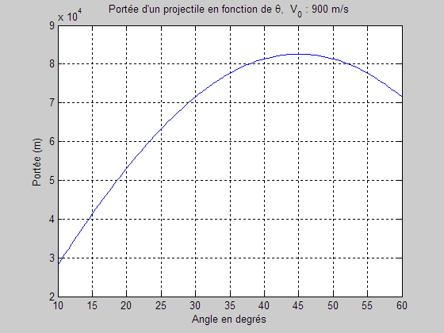

Portée P d'un projectile
La portée P d'un projectile en fonction de l'angle thêta variant entre 10 et 60 degrés, à tous les 0.5° (choix éditorial).
La fonction input est remplacée par des valeurs fixes afin d'utiliser « Publish to html ».
clear; clc; close all; V0 = 900; % m/s à remplacer par % V0=input('V0 ? '); g=9.8067;
Pseudodéclaration
Influence la vitesse d'exécution et réduit la quantité de mémoire requise pendant l'exécution.
>> doc zeros
theta = zeros(1,101); % pseudodéclaration p = zeros(size(theta)); for i = 1:101 theta(i) = 10 + (i-1)*0.5; P(i)=V0*V0/g*sind(2*theta(i)); end
Tracé du graphique
plot(theta,P) xlabel('Angle en degrés'); ylabel('Portée (m)'); title(['Portée d''un projectile en fonction de ',... '\theta, V_0 : ',num2str(V0),' m/s']) grid on;

La réponse serait différente si on tenait compte de la résistance de l'air.